건설기계설비기사 (2012-03-04 기출문제)
1과목: 재료역학
1. 그림과 같이 원형단면을 갖는 연강봉이 100kN의 인장하중을 받을 때 이 봉의 신장량은? (단, 탄성계수 E=200GPa이다.)
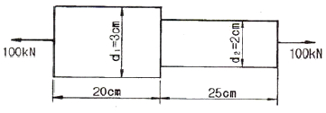
- 0.⑤4cm
- 0.162cm
- 0.236cm
- 0.302cm
(정답률: 알수없음)

2. 단면이 가로 100mm, 세로 150mm인 사각 단면보가 그림과 같이 하중(P)을 받고 있다. 허용 전단응력이 τa=20MPa일 때 전단응력에 의한 설계에서 허용하중 P는 몇 kN인가?
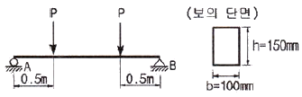
- 10
- 20
- 100
- 200
(정답률: 알수없음)
3. 양단이 고정단이고 길이가 직경의 10배인 주철 재질의 원주가 있다. 이 기둥의 임계응력을 오일러 식을 이용해 구하면 얼마인가? (단, 재료의 탄성계수는 E이다.)
- 0.266E
- 0.0247E
- 0.0⑤47E
- 0.00146E
(정답률: 알수없음)
4. 그림과 같은 단순 지지보에서 길이는 5m, 중앙에서 집중하중 P가 작용할 때 최대 처짐은 약 몇 mm인가? (단, 보의 단면(폭×높이=b×h)은 5cm×12cm. 탄성계수 E=210GPa, P=25kN으로 한다.)
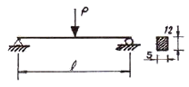
- 83
- 43
- 28
- 65
(정답률: 알수없음)
5. 그림과 같은 직사각형 단면의 보에 P=4 kN의 하중이 10°경사진 방향으로 작용한다. A점에서의 길이 방향의 수직응력을 구하면 몇 MPa인가?
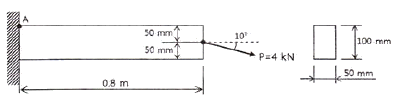
- 5.89(압축)
- 6.67(압축)
- 0.79(인장)
- 7.46(인장)
(정답률: 알수없음)
6. 길이가 L인 양단 고정보의 중앙점에 집중하중 P가 작용할 때 중앙점의 최대 처짐은? (단, 보의 굽힘강성 EI는 일정하다.)
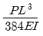
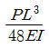
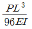
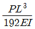
(정답률: 알수없음)
7. 길이 1m인 단순보가 아래 그림처럼 q=5kN/m의 균일 분포하중과 P=1kN의 집중하중을 받고 있을 때 최대 굽힘 모멘트는 얼마이며 그 발생되는 지점은 A점에서 얼마되는 곳인가?
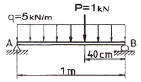
- 48cm에서 241Nㆍm
- 58cm에서 620Nㆍm
- 48cm에서 800Nㆍm
- 58cm에서 841Nㆍm
(정답률: 알수없음)
8. 그림과 같이 두께가 20mm, 외경이 200mm인 원관을 고정벽으로부터 수평으로 돌출시켜 원관에 물을 충만시켜서 자유단으로 부터 물을 방출시킨다. 이 때 자유단의 처짐이 5mm라면 원관의 길이 ℓ는 약 몇 cm인가? (단, 원관 재료의 탄성계수 E=200GPa, 비중은 7.8이고 물의 밀도는 1000kg/m3이다.)
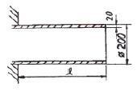
- 130
- 230
- 330
- 430
(정답률: 알수없음)
9. 다음과 같은 압력 기구에 안전 밸브가 장치되어 있다. 이때 스프링 상수가 k=100kN/m이고 자연상태에서의 길이는 240mm라 한다. 몇 kN/m2의 압력에 밸브가 열리겠는가?
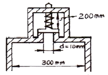
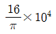
- π×104
- π×102
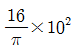
(정답률: 알수없음)
10. 그림과 같은 집중하중을 받는 단순 지지보의 최대 굽힘 모멘트는? (단, 보의 굽힘강성 EI는 일정하다.)
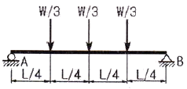
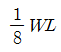
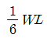
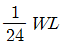
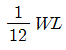
(정답률: 알수없음)
11. 코일스프링에서 가하는 힘 P, 코일 반지름 R, 소선의 지름 d, 전단탄성계수 G라면 코일 스프링에 한번 감길 때마다 소선의 비틀림각 ø를 나타내는 식은?
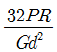
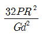
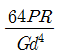
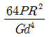
(정답률: 알수없음)
12. 지름 d인 환봉을 처짐이 최소가 되도록 직시각형 단면의 보를 만들 경우 단면의 폭 b와 높이 h의 비(h/b)는?
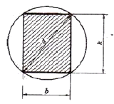
- 1
- √2
- √3
- √5
(정답률: 알수없음)
13. 철도용 레일의 양단을 고정한 후 온도가 30℃에서 15℃로 내려가면 발생하는 열응력은 몇 MPa인가? (단, 레일재료의 열팽창계수 α=0.000012/℃이고, 균일한 온도 변화를 가지며, 탄성계수 E=210GPa이다.)
- 50.4
- 37.8
- 31.2
- 28.0
(정답률: 알수없음)
14. 그림과 같은 1축 응력(응력치:σ, σ는 y축 방향) 상태에서 재료의 Z-Z 단면(x축과 45°반시계 방향 경사)에 생기는 수직응력 σn, 전단응력 τn의 값은?
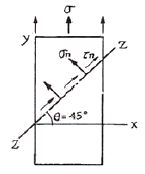
- σn=σ, τn=σ
- σn=σ, τn=σ/2
- σn=σ/2, τn=σ
- σn=σ/2, τn=σ/2
(정답률: 알수없음)
15. 짧은 주철재 실린더가 축방향 압축 응력과 반경 방향의 압축 응력을 각가 40MPa과 10MPa를 받는다. 탄성계수 E=100GPa, 포아송 비 v=0.25, 직경 d=120m, 길이 L=200mm 일 때 지름의 변화량은 약 몇 mm인가?
- 0.001
- 0.002
- 0.003
- 0.004
(정답률: 알수없음)
16. 외경이 내경의 1.5배인 중공축과 재질과 길이가 같고 지름이 중공축의 외경과 같은 중실축이 동일 회전수에 동일 동력을 전달한다면, 이때 중실축에 대한 중공축의 비틀림각의 비는?
- 1.25
- 1.50
- 1.75
- 2.00
(정답률: 알수없음)
17. 굽힘하중을 받고 있는 선형 탄성 균일단면 보의 곡률 및 곡률반경에 대한 설명으로 틀린 것은?
- 곡률은 굽힘모멘트 M에 반비례한다.
- 곡률반경은 탄성계수 E에 비례한다.
- 곡률은 보의 단면 2차 모멘트 I에 반비례한다.
- 곡률반경은 곡률의 역수이다.
(정답률: 알수없음)
18. 양단이 고정된 축을 그림과 같이 m-n 단면에서 비틀면 고정단에서 생기는 저항 비틀림 모멘트의 비 TB/TA는?
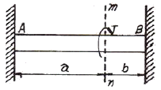
- ab
- b/a
- a/b
- ab2
(정답률: 알수없음)
19. 진변형률(εT)과 진응력(σT)을 공칭 응력(σn)과 공칭 변형률(εn)로 나타낼 떄 옳은 것은?
- σT=σn(1+εn), εT=ln(1+εn)
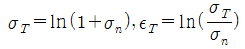
- σT=σnln(1+εn), εT=εnln(1+σn)
- σT=ln(1+εn), εT=εn(1+σn)
(정답률: 알수없음)
20. 그림에서 W1과 W2가 어느 한쪽도 내려가지 않게 하기 위한 W1:W2의 크기의 비는 어느 것인가? (단, 경사면의 마찰은 무시한다.)
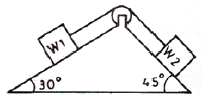
- W1 : W2 = sin30° : sin45°
- W1 : W2 = sin45° : sin30°
- W1 : W2 = cos45° : cos30°
- W1 : W2 = cos30° : cos45°
(정답률: 알수없음)
2과목: 기계열역학
21. 실린더안에 0.8kg의 기체를 넣고 이것을 압축하기 위해서는 13kJ의 일이 필요하며, 또 이때 실린더를 냉각하기 위해서 10kJ의 열을 빼앗아야 한다면 이 기체의 비 내부에너지 변화량은?
- 3.75kJ/kg의 증가
- 28.8kJ/kg의 증가
- 3.75kJ/kg의 감소
- 28.8kJ/kg의 감소
(정답률: 알수없음)
22. 에어컨을 이용하여 실내의 열을 외부로 방출하려한다. 실외 35℃, 실내 20℃인 조건에서 실내로부터 3kW의 열을 방출하려 할 때 필요한 에어컨의 동력은 얼마인가? (단, Carnot cycle을 가정한다.)
- 0.154kW
- 1.54kW
- 15.4kW
- 154kW
(정답률: 알수없음)
23. 두께 1 cm, 면적 0.5m2의 석고판의 뒤에 가열 판이 부착되어 1000W의 열을 전달한다. 가열 판의 뒤는 완전히 단열되어 열은 앞면으로만 전달된다. 석고판 앞면의 온도는 100℃이다. 석고의 열전도율이 k=0.79W/mㆍK일 때 가열 판에 접하는 석고 면의 온도는 약 몇 ℃인가?
- 110
- 125
- 150
- 212
(정답률: 알수없음)
24. 다음 냉동 시스템의 설명 중 틀린 것은?
- 왕복동 압축기는 냉매가 낮은 비체적과 높은 압력일 때 적합하며 원심 압축기는 높은 비체적과 낮은 압력일 때 적합하다.
- R-22와 같이 수소를 포함하는 HCFC는 대기 중의 수명이 비교적 짧으므로 성층권에 도달하여 분해되는 양이 적다.
- 냉동 사이클은 동력 사이클의 터빈을 밸브나 긴 모세관 등의 스로틀 기기로 대치하여 작동유체가 고압에서 저압으로 스로틀 팽창하도록 한다.
- 흡수식 시스템은 액체를 가압하므로 소요되는 입력 일이 매우 크다.
(정답률: 알수없음)
25. 29℃와 227℃사이에서 작동하는 카르노(Carnot) 사이클 열기관의 열효율은?
- 60.4%
- 39.6%
- 0.604%
- 0.396%
(정답률: 알수없음)
26. 고속주행 시 타이어의 온도는 매우 많이 상승한다. 온도 20℃에서 계기압력 0.183MPa의 타이어가 고속주행으로 온도 80℃로 상승할 때 압력 상승한 양(kPa)은? (단, 타이어의 체적은 변하지 않고, 타이어 내의 공기는 이상기체로 가정한다. 대기압은 101.3kPa이다.)
- 약 37kPa
- 약 58kPa
- 약 286kPa
- 약 345kPa
(정답률: 알수없음)
27. 어ᄄᅠᆫ 냉장고에서 질량유량 80kg/hr의 냉매가 17kJ/kg의 엔탈피로 증발기에 들어가 엔탈피 36kJ/kg가 되어 나온다. 이 냉장고의 냉동능력은?
- 1220kJ/hr
- 1800kJ/hr
- 1520kJ/hr
- 2000kJ/hr
(정답률: 알수없음)
28. 오토사이클(Otto Cycle)의 이론적 열효율 ηth를 나타내는 식은? (단,
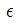
는 압축비, k는 비열비이다.)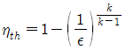
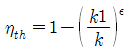
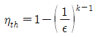
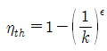
(정답률: 알수없음)
29. 다음 사항 중 옳은 것은?
- 엔트로피는 상태량이 아니다.
- 엔트로피는 구하는 적분 경로는 반드시 가역변화라야 한다.
- 비가역 사이클에서 클라우지우스(Clausius) 적분은 영이다.
- 가역, 비가역을 포함하는 모든 이상기체의 등온변화에서 압력이 저하하면 에트로피도 저하한다.
(정답률: 알수없음)
30. 성능계수(COP)가 0.8인 냉동기로서 7200kJ/h로 냉동하려면, 이에 필요한 동력은?
- 약 0.9kW
- 약 1.6kW
- 약 2.5kW
- 약 2.0kW
(정답률: 알수없음)
31. 다음 열기관 사이클의 에너지 전달량으로 적절한 것은?
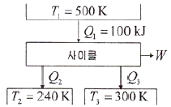
- Q2=20kJ, Q3=30kJ, W=50kJ
- Q2=20kJ, Q3=50kJ, W=30kJ
- Q2=30kJ, Q3=30kJ, W=50kJ
- Q2=30kJ, Q3=20kJ, W=50kJ
(정답률: 알수없음)
32. 다음 중 열역할적 상태량이 아닌 것은?
- 기체상수
- 정압비열
- 엔트로피
- 압력
(정답률: 알수없음)
33. 그림과 같은 증기압축 냉동사이클이 있다. 1, 2, 3 상태의 엔탈피가 다음과 같을 때 냉매의 단위 질량당 소요 동력과 냉각량은 얼마인가? (단, h1=178.16, h2=210.38, h3=74.53, 단위:kJ/kg)
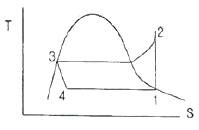
- 32.22kJ/kg, 103.63 kJ/kg
- 32.22kJ/kg, 136.85 kJ/kg
- 103.63kJ/kg, 32.22 kJ/kg
- 136.85kJ/kg, 32.22 kJ/kg
(정답률: 알수없음)
34. 물질의 상태에 관한 설명으로 옳은 것은?
- 압력이 포화압력보다 높으면 과열증기 상태다.
- 온도가 포화온도보다 높으면 압축액체이다.
- 임계압력 이하의 액체를 가열하면 증발현상을 거치지 않는다.
- 포화상태에서 압력과 온도는 종속관계에 있다.
(정답률: 알수없음)
35. 질량 m=100kg인 물체에 a=2.5m/s2의 가속도를 주기 위해 가해야 할 힘(F)은 약 몇 N인가?
- 102
- 2⑤
- 225
- 250
(정답률: 알수없음)
36. 100kPa, 20℃의 물을 매시간 3000kg씩 500kPa로 공급하기 위하여 소요되는 펌프의 동력은 약 몇 kW인가? (단, 펌프의 효율은 70%로 물의 비체적은 0.001m3/kg으로 본다.)
- 0.33
- 0.48
- 1.32
- 2.48
(정답률: 알수없음)
37. 대기압하에서 20℃의 물 1kg을 가열하여 같은 압력의 150℃의 과열 증기로 만들었다면, 이때 물이 흡수한 열량은 20℃와 150℃에서 어떠한 양의 차이로 표시되겠는가?
- 내부에너지
- 엔탈피
- 엔트로피
- 일
(정답률: 알수없음)
38. 두 정지 계가 서로 열 교환을 하는 경우에 한쪽 계는 수열에 의한 엔트로피 증가가 있고, 다른 계는 방열에 의한 엔트로피 감소가 있다. 이들 두 계를 합하여 한 계로 생각하면 단열된 계가 된다. 이 합성계가 비가역 단열변화를 하면 이 합성계의 엔트로피 변화 dS는?
- dS ＜ 0
- dS ＞ 0
- dS = 0
- dS ≠ 0
(정답률: 알수없음)
39. 질량 4kg의 액체를 15℃에서 100℃까지 가열하기 위해 825kJ의 열을 공급하였다면 액체의 비열(specific heat)은 몇 J/kgㆍK인가?
- 1100
- 2100
- 3100
- 4100
(정답률: 알수없음)
40. 800kPa, 350℃의 수증기를 200kPa로 교축한다. 이 과정에 대하여 운동 에너지의 변화를 무시할 수 있다고 할 때 이 수증기의 Joule-Thomson 계수는? (단, 교축 후의 온도는 344℃이다.)
- 0.0⑤ K/kPa
- 0.01 K/kPa
- 0.02 K/kPa
- 0.03 K/kPa
(정답률: 알수없음)
3과목: 기계유체역학
41. 다음 중 Moody선도에 대하여 잘못 설명한 것은?
- J.Nikuradse에 의하여 얻어진 자료를 기초로 하였다.
- 압축성 영역의 유동에도 적용이 가능하다.
- 마찰계수와 레이놀즈수와의 관계를 보인다.
- 마찰계수와 상대조도와의 관계를 보인다.
(정답률: 알수없음)
42. 직경이 5mm인 원형 직선관 내를 0.2L/min의 유량으로 물이 흐르고 있다. 유량을 두 배로 하기 위해서는 몇 배의 압력을 가해 주어야 하는가? (단, 물의 동점성계수는 약 10-6m2/s 이다.)
- 0.71배
- 1.41배
- 2배
- 4배
(정답률: 알수없음)
43. 온도 25℃인 공기의 압력이 200kPa(abs)일 때 동점성 계수는 0.12cm2/s이다. 이 온도와 압력에서 공기의 점성계수는 약 몇 kg/mㆍs인가? (단, 공기의 기체상수는 287J/DLEK.)
- 2.338
- 27.87
- 2.8×10-5
- 0.12×10-4
(정답률: 알수없음)
44. x, y좌표계의 비회전 2차원 유동장에서 속도 포텐셜(potential) ø는 ø=2x2y로 주어진다. 점(3, 2)인 곳에서 속도 벡터는? (단, 속도포텐셜 ø는
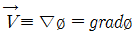
로 정의된다.)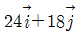
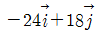
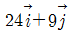
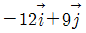
(정답률: 알수없음)
45. 그림에서 h=50cm이다. 액체의 비중이 1.90일 때 A점의 계기압력은 몇 Pa인가?
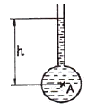
- 9500
- 950
- 93200
- 9310
(정답률: 알수없음)
46. 그림과 같이 고정된 노즐로부터 밀도가 ρ인 액체의 제트가 속도 V로 분출하여 평판에 충돌하고 있다. 이때 제트의 단면적이 A이고 평판이 u인 속도로 분류 방향으로 운동할 때 평판에 작용하는 힘 F는?
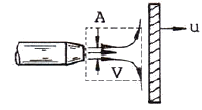
- F=ρA(V+u)
- F=ρA(V+u)2
- F=ρA(V-u)
- F=ρA(V-u)2
(정답률: 알수없음)
47. 정압이 100kPa인 물(밀도 100kg/m3)이 20m/s로 흐르고 있을 때 정체압은 몇 kPa인가?
- 150
- 103
- 200
- 300
(정답률: 알수없음)
48. 모세관 현상에 대한 설명으로 틀린 것은?
- 액체가 관을 적실 때(wet) 액체 기둥은 원래의 표면보다 상승한다.
- 접촉각이 90°보다 작을 때 관의 직경이 가늘수록 액체는 더 높이 상승한다.
- 접촉각이 90°보다 클 때 액체 기둥은 원래의 표면보다 상승한다.
- 동일한 조건에서 표면장력만 2배가 되면, 액체 기둥의 상승 높이는 2배가 된다.
(정답률: 알수없음)
49. 프란틀의 혼합거리(mixing length)에 대한 설명 중 옳은 것은?
- 전단응력과 무관하다.
- 벽에서 0이다.
- 항상 일정하다.
- 층류 유동문제를 계산하는데 유용하다.
(정답률: 알수없음)
50. 지름 D=4cm, 무게W=0.4N인 골프공이 60m/s의 속도로 날아가고 있을 때, 골프공이 받는 항력과 항력에 의한 가속도의 크기는 중력가속도의 몇 배인가? (단, 골프공의 항력계수 CD=0.25이고, 공기의 밀도는 1.2kg/m3이다.)
- 6.78N, 1.7배
- 6.78N, 0.7배
- 0.678N, 1.7배
- 0.678N, 0.7배
(정답률: 알수없음)
51. 내경 10cm의 원관 속을 0.1m3/s의 물이 흐를 때 관속의 평균 유속은 약 몇 m/s인가?
- 0.127
- 1.27
- 12.7
- 127
(정답률: 알수없음)
52. 중력과 관성력의 비로 정의되는 무차원수는? (단, ρ:밀도, V:속도, l:특성 길이, μ:점성계수, P:압력, g:중력가속도, c:소리의 속도)
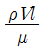
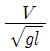
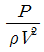
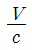
(정답률: 알수없음)
53. 물을 사용하는 원심 펌프의 설계점에서의 전 양정이 30m이고 유량은 1.2m3/min이다. 이 펌프를 설계점에서 운전할 때 필요한 축 동력이 7.35kW라면 이 펌프의 전 효율은?
- 70%
- 80%
- 90%
- 100%
(정답률: 알수없음)
54. 파이프 유동에 대한 다음 설명 중 틀린 것은?
- 레이놀즈수가 1500일 때 관마찰계수는 약 0.043이다.
- 수력반경은 유동의 단면적과 접수 길이에 의하여 결정된다.
- 원형관 속의 손실 수두는 점성유체에서 발생한다.
- 부차적 손실은 관의 거칠기에 의해 주로 발생한다.
(정답률: 알수없음)
55. 원통형의 면 ABC에 수평방향으로 작용하는 힘은 약 몇 kN인가? (단, 유체의 비중은 1이다.)
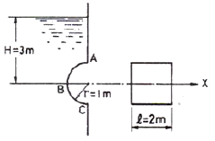
- 117.6
- 307.9
- 122
- 3
(정답률: 알수없음)
56. 피스톤 A2의 반지름 A1 반지름의 2배이며 A1과 A2에 작용하는 압력을 각각 P1,P2라 하면 P1과 P2사이의 관계는? (단, 두 피스톤은 같은 높이에 위치하고 있다.)
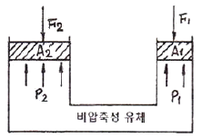
- P1=2P2
- P2=4P1
- P1=P2
- P2=2P1
(정답률: 알수없음)
57. 다음 중 밀도가 가장 큰 액체는?
- 1g/cm3
- 1200kg/m3
- 비중 1.5
- 비중량 8000N/m3
(정답률: 알수없음)
58. 공기 중을 10m/s로 움직이는 소형 비행선의 항력을 구하려고 1/5 축척의 모형을 물속에서 실험하려고 할 때 모형의 속도는 몇 m/s로 해야 하는가? (단, 밀도:물 1000kg/m3, 공기 1kg/m3, 점성계수:물 1.8×10-3Nㆍs/m2, 공기1×10-5Nㆍs/m2)
- 10
- 2
- 50
- 9
(정답률: 알수없음)
59. 유량이 10m3/s로 일정하고 수심이 1m로 일정한 강의 폭이 매 10m 마다 1m 씩 좁아진다. 강 폭이 5m인 곳에서 강물의 가속도는 몇 m/s2인가? (단, 흐름 방향으로만 속도성분이 있다고 가정한다.)
- 0
- 0.02
- 0.04
- 0.08
(정답률: 알수없음)
60. 공기의 유속을 측정하기 위하여 피토관을 사용했다. 물을 담은 U자관의 수주의 높이의 차가 10cm라면 공기의 유속은 약 몇 m/s인가? (단, 공기의 밀도는 1.25kg/m3이다.)
- 9.8
- 19.8
- 29.6
- 39.6
(정답률: 알수없음)
4과목: 유체기계 및 유압기기
61. 소구기관의 소기형식은 주로 다음 중 어느 방식을 많이 사용하는가?
- 루우트 소기
- 과급기 소기
- 크랭크실 소기
- 대향 피스톤형 소기
(정답률: 알수없음)
62. 연료 소비율이 272g/kWㆍh이고, 연료의 저위발열량이 41870kJ/kg일 때 제동 열효율은 약 몇 %인가?
- 31.6
- 32.6
- 33.7
- 35.7
(정답률: 알수없음)
63. 내연기관에서 밸브 오버랩(valve over lap)이란?
- 폭발행정 말에서 배기행정 초까지 흡ㆍ배기밸브가 동시에 열리는 것이다.
- 흡입행정 말에서 압축행정 초까지 흡ㆍ배기밸브가 동시에 열리는 것이다.
- 배기행정 말에서 흡입행정 초까지 흡ㆍ배기밸브가 동시에 열리는 것이다.
- 압축행정 초에서 압축행정 말까지 흡ㆍ배기밸브가 동시에 열리는 것이다.
(정답률: 알수없음)
64. 대체 연료 중 수소 연료의 특징이 아닌 것은?
- 이산화탄소는 전혀 배출되지 않는다.
- 연소에 의해 생기는 것은 물과 질소산화물이다.
- 피스톤 방식의 엔진에는 적합하지 않다.
- 공연비 농후시 CO, HC의 발생량이 증가한다.
(정답률: 알수없음)
65. 2개의 로터를 갖는 로터리 기관은 왕복 형 기관의 실린더 수로는 몇 개에 해당하는가?
- 2
- 3
- 4
- 6
(정답률: 알수없음)
66. 디젤사이클의 열효율식으로 옳은 것은? (단,  :압축비, k:비열비(정압비열/정적비열), ρ:단절비(정압팽창비), α:폭발비(압력비)이다.)
:압축비, k:비열비(정압비열/정적비열), ρ:단절비(정압팽창비), α:폭발비(압력비)이다.)
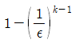
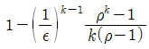
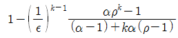
(정답률: 알수없음)
67. 내연기과에서 피스톤 링의 3대 주요 작용이 아닌 것은?
- 방진작용
- 기밀작용
- 열전도 작용
- 오일제어 작용
(정답률: 알수없음)
68. 실린더 블럭과 실린더를 별개로 한 실린더 즉, 라이너(liner)를 이용하는 장점이 아닌 것은?
- 실린더 마모시 피스톤링의 교체가 용이하다.
- 라이너 부분을 내마모성 재료로 쓸 수 있다.
- 마멸의 경우 라이너만 바꾸면 된다.
- 실린더 주조가 쉽다.
(정답률: 알수없음)
69. 연료의 저위발열량이 43200kJ/kg이고, 기관의 효율이 30%일 때 연료의 소비율(g/kWㆍh)은?
- 약 134.4
- 약 142.6
- 약 150.5
- 약 277.8
(정답률: 알수없음)
70. 디젤기관의 기계식 조속기 중 전속도 제어형 조속기는?
- RS형
- RQ형
- RE형
- RSV형
(정답률: 알수없음)
71. 그림과 같은 유압기호는 무슨 밸브의 기호인가?
- 카운터 밸런스 밸브
- 무부하 밸브
- 시퀀스 밸브
- 릴리프 밸브
(정답률: 알수없음)
72. 피스톤 부하가 급격히 제거되었을 때 피스톤이 급진하는 것을 방지하는 등의 속도제어회로로 가장 적합한 것은?
- 카운터 밸런스 회로
- 시퀀스 회로
- 언로드 회로
- 증압 회로
(정답률: 알수없음)
73. 어큐물레이터(accumulator)의 주요 용도가 아닌 것은?
- 유압 에너지의 축적
- 펌프의 맥동 흡수
- 충격 압력의 완충
- 유압 장치의 대형화
(정답률: 알수없음)
74. 안지름이 10mm인 파이프에 2×104cm3/min의 유량을 통과시키기 위한 유체의 속도는 약 몇 m/s인가?
- 4.2
- 5.2
- 6.2
- 7.2
(정답률: 알수없음)
75. 슬라이드 밸브 등에서 밸브가 중립점에 있을 때, 이미 포트가 열리고, 유체가 흐르도록 중복된 상태를 의미하는 용어는?
- 제로 랩
- 오버 랩
- 언더 랩
- 랜드 랩
(정답률: 알수없음)
76. 1개의 유압 실린더에서 전진 및 후진 단에 각각의 리밋스위치를 부착하는 이유로 가장 적합한 것은?
- 실린더의 위치를 검출하여 제어에 사용하기 위하여
- 실린더 내의 온도를 제어하기 위하여
- 실린더의 속도를 제어하기 위하여
- 실린더 내의 압력을 계측하여 이를 제어하기 위하여
(정답률: 알수없음)
77. 유압펌프의 소음발생 원인으로 거리가 먼 것은?
- 회전수가 규정치를 초과한 경우
- 릴리프 밸브가 닫힌 경우
- 펌프의 흡입이 불량한 경우
- 작동유의 점성이 너무 높은 경우
(정답률: 알수없음)
78. 유압 속도젱 회로 중 미터 아웃 회로의 설치 목적과 관계없는 것은?
- 피스톤이 자주(自走)할 염려를 제거한다.
- 실린더에 배압을 형성한다.
- 실린더의 용량을 변화시킨다.
- 실린더에 유출되는 유량을 제어하여 피스톤 속도를 제어한다.
(정답률: 알수없음)
79. 유압 작동유에 요구되는 성질이 아닌 것은?
- 비 인화성일 것
- 오염물 제거 능력이 클 것
- 체적 탄성계수가 작을 것
- 캐비테이션에 대한 저항이 클 것
(정답률: 알수없음)
80. 다음 유압회로의 명칭으로 옳은 것은?
- 로크 회로
- 증압 회로
- 무부하 회로
- 축압 회로
(정답률: 알수없음)
5과목: 건설기계일반 및 플랜트배관
81. 최소 측정값이 1/20mm인 버니어캘리퍼스에 대한 설명으로 옳은 것은?
- 본척의 최소 눈금이 1mm, 부척의 1눈금은 12mm를 25등분한 것
- 본척의 최소 눈금이 1mm, 부척의 1눈금은 19mm를 20등분한 것
- 본척의 최소 눈금이 0.5mm, 부척의 1눈금은 19mm를 25등분한 것
- 본척의 최소 눈금이 0.5mm, 부척의 1눈금은 24mm를 20등분한 것
(정답률: 알수없음)
82. 주조시 탕구의 높이와 유속과의 관계가 옳은 식은? (단, v:유속(cm/s), h:탕구의 높이(쇳물이 채워진 높이, cm), g: 중력 가속도(cm/s2), C:유량계수이다.)
(정답률: 알수없음)
83. 센터리스 연삭의 특징에 대한 설명으로 틀린 것은?
- 연속작업을 할 수 있어 대량 생산이 용이하다.
- 축 방향의 추력이 있으므로 연삭 여유가 커야한다.
- 높은 숙련도를 요구하지 않는다.
- 키 홈과 같은 긴 홈이 있는 가공물은 연삭이 어렵다.
(정답률: 알수없음)
84. 두께 2mm의 연강판에 지름 20mm의 구멍을 펀칭하는데 소요되는 동력은 약 몇 kW인가? (단, 프레스 평균전단속도는 5m/min, 판의 전단응력은 275MPa, 기계효율은 60%이다.)
- 3.2
- 3.9
- 4.8
- 5.4
(정답률: 알수없음)
85. 구성인선(Built-up edge)의 방지대책으로 틀린 것은?
- 칩의 두께를 크게 한다.
- 경사각(Built-up edge)을 크게 한다.
- 절삭속도를 크게 한다.
- 절삭공구의 인선을 예리하게 한다.
(정답률: 알수없음)
86. 지름 4mm의 가는 봉재를 선재인발(wire drawing)하여 3.5mm가 되었다면 단면 감소율은?
- 23.4%
- 14.2%
- 12.5%
- 5.7%
(정답률: 알수없음)
87. 200mm 사인바로 10°각을 만들려면 사인바 양단의 게이지블록의 높이차는 약 몇 mm이어야 하는가? (단, 경사면과 측정면이 일치한다.)
- 34.73mm
- 39.70mm
- 44.76mm
- 49.10mm
(정답률: 알수없음)
88. 용접의 분류에서 아크 용접이 아닌 것은?
- MIG용접
- TIG용접
- 테르밋 용접
- 스터드 용접
(정답률: 알수없음)
89. 일반적으로기계가공한 강제품을 열처리하는 목적이 아닌 것은?
- 표면을 경화시키기 위한 것이다.
- 조직을 안정화시키기 위한 것이다.
- 조직을 조대화하여 편석을 발생시키기 위한 것이다.
- 경도 및 강도를 증가시키기 위한 것이다.
(정답률: 알수없음)
90. 다음 중 정밀입자에 의한 가공이 아닌 것은?
- 호닝
- 래핑
- 버핑
- 버니싱
(정답률: 알수없음)
91. 크레인의 작업장치 중 배수로 작업, 매몰작업, 굴토 작업 등에 가장 적합한 것은?
- Hook
- Pile driver
- Boom
- Trench hoe
(정답률: 알수없음)
92. 무한 궤도식 건설기계에서 지면에 접촉하여 바퀴역할을 하는 트랙(track)의 구성요소에 해당하지 않는 것은?
- 트랙 슈(track shoe)
- 링크(link)
- 부싱(bushing)
- 휠(wheel)
(정답률: 알수없음)
93. 건설기계관리법에 따라 무한궤도식 굴삭기의 접지압의 기준으로 틀린 것은?
- 버킷 산적이 0.2m3이상 0.5m3이하인 경우 접지압은 0.5kgf/m2이하일 것
- 버킷 산적이 0.5m3초과 1.0m3이하인 경우 접지압은 0.75kgf/m2이하일 것
- 버킷 산적이 1.0m3초과 1.5m3이하인 경우 접지압은 1.0kgf/m2이하일 것
- 버킷 산적이 1.5m3초과 2.5m3이하인 경우 접지압은 1.25kgf/m2이하일 것
(정답률: 알수없음)
94. 모터 그레이더로 0.15m 두께로 흙고르기 작업을 할 때의 시간당 작업량은 약 몇 m3/h 인가? (단, 1회의 작업거리는 80m, 토공판의 유효길이는 2.7m, 토량환산의 계수 1, 작업효율은 70%이며, 1회 사이클 타임은 2.54분이다.)
- 440
- 536
- 612
- 689
(정답률: 알수없음)
95. 다음 중 건설기계관리법에서 규정하는 건설기계의 범위에 해당하지 않는 것은?
- 지게차: 타이어식으로 들어올림장치를 가진 것. 다만, 전동식으로 솔리드타이어를 부착한 것을 제외한다.
- 준설선: 펌프식ㆍ바켓식ㆍ디퍼식 또는 그래브식으로 자항식인 것. 다만, 해상화물운송에 사용하기 위하여 「선박법」에 따른 선박으로 등록된 것은 제외한다.
- 모터 그레이더: 정지장치를 가진 자주식인 것
- 쇄석기: 20킬로와트 이상의 원동기를 가진 이동식인 것
(정답률: 알수없음)
96. 아스팔트 피니셔에서 노면에 살포된 아스팔트 혼합재를 매끈하게 다듬질하는 판에 해당하는 것은?
- 스크리드
- 리시빙 호퍼
- 피더
- 스프레이팅 스크루
(정답률: 알수없음)
97. 다음 중 트리밍 도저(trimming dozer)에 대한 설명으로 옳은 것은?
- 배토판의 좌우 날개부분을 앞쪽으로 일정 각도로 구부려 배토판을 U자 모양으로 한 도저
- 토공판의 중간에 힌지를 둔 것으로 토공판을 펴거나 한쪽으로 꺾을 수 있는 도저
- 토공판과 트랙터 전면과의 거리를 길게 하고 토공판의 설치각도를 변화시킴으로써 좁은 장소나 선창 모퉁이 부위에 쌓여있는 석탄이나 광석을 끄집어내는데 효과적인 도저
- 토공판 대신 갈퀴모양의 장치를 설치한 것으로 그루터기나 도목, 나무, 전석 등의 제거에 효과적으로 과수원 조성을 위한 제조작업 등에 사용하는 도저
(정답률: 알수없음)
98. 롤러의 종류 중 자체 중량을 이용하는 전압식 롤러에 해당하지 않는 것은?
- 탠덤 롤러
- 진동 롤러
- 머캐덤 롤러
- 타이어 롤러
(정답률: 알수없음)
99. 굴착 적재기계 중 하나로 버킷래더굴착기와 유사한 구조로서 커터비트(cutter bit)를 규칙적으로 배열한 체인커터를 회전시키는 커터붐을 차체에 설치하고 커터의 회전으로 토사를 굴착하는 것은?
- 트렌처(trencher)
- 크램쉘(clamshell)
- 드래그라인(dragline)
- 백호(back hoe)
(정답률: 알수없음)
100. 도저로 작업 시 슬롯 압토법(홈 송토법)을 하는 목적으로 가장 가까운 것은?
- 토사를 빨리 적재하기 위하여
- 토사가 흘러넘치는 것을 방지하기 위하여
- 토사를 고르게 다지기 위하여
- 토사 파기를 빨리 하기 위하여
(정답률: 알수없음)
여기서 인장응력은 F/A로 구할 수 있다. A는 원형단면의 면적으로, A=πr^2이다.
따라서 인장응력은 F/πr^2이다.
변형률은 (F/πr^2)/E이다.
이제 주어진 값들을 대입하면,
변형률 = (100kN/π(1cm)^2)/200GPa = 0.000027
따라서 신장량은 변형률 x 초기길이 = 0.000027 x 200cm = 0.⑤4cm 이다.
따라서 정답은 "0.⑤4cm"이다.